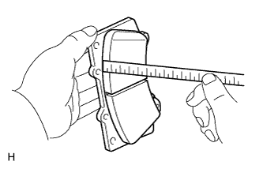
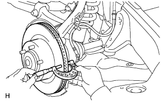
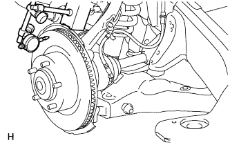

FRONT BRAKE > INSPECTION |
| 1. CHECK BRAKE CYLINDER AND PISTON |
Check the cylinder bore and piston for rust or scoring.
If necessary, replace the disc brake caliper assembly.
| 2. CHECK PAD LINING THICKNESS |
 |
Using a ruler, measure the pad lining thickness.
| 3. CHECK FRONT DISC BRAKE ANTI-RATTLE SPRING |
Use brake cleaner to clean the front disc brake anti-rattle spring. Check for deformation and cracks.
When installing the front disc brake anti-rattle spring to the front disc brake caliper, check that the spring force is applied to the hole pin and brake pad.
| 4. CHECK DISC THICKNESS |
 |
Using a micrometer, measure the disc thickness.
| 5. CHECK DISC RUNOUT |
Fix the disc in place with the 5 hub nuts.
 |
Using a dial indicator, measure the disc runout 10 mm (0.394 in.) from the outer edge of the disc.
If the runout is more than the maximum, change the installation positions of the disc and axle so that the runout will become minimal. If the runout is more than the maximum even when the installation positions are changed, check the bearing looseness in the axial direction (Click here) and the axle hub runout (Click here). If the bearing looseness and the axle hub runout are normal, and if the disc thickness is not within the specified range, grind the disc. If the disc thickness is less than the minimum, replace the disc.
Remove the 5 hub nuts and front disc.